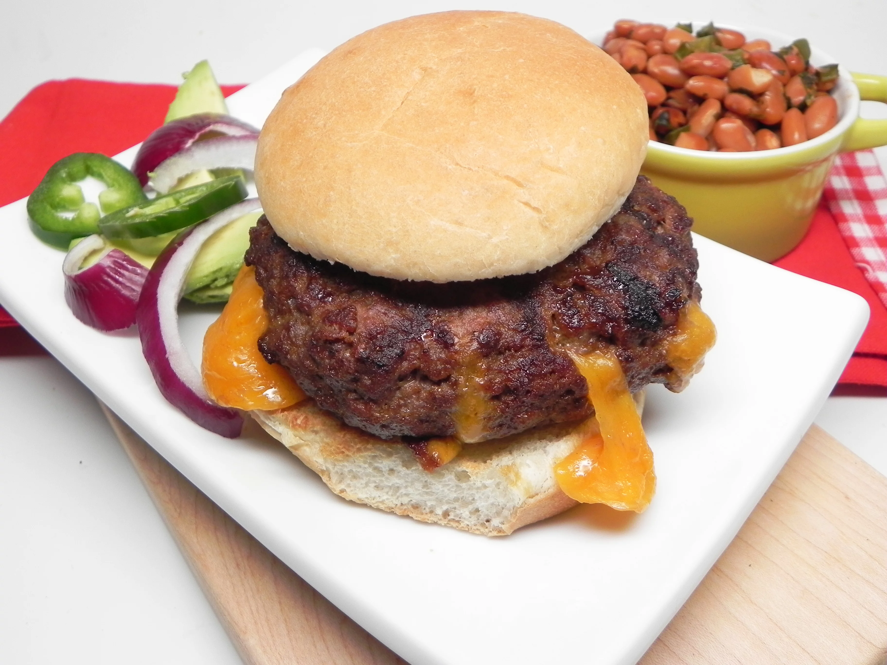

Cheesy Taco Burgers

A simple and sweet burger with a taco taste...Taco Tuesday?
There's truly not much to say about this burger...It's a pretty normal burger except it has a taco like taste with it.
Ingredients
- 1 pound ground beef
- 1 (1 ounce) package of taco seasoning
- 3 thick boy slices of Cheddar cheese
- 3 hamburger buns, split
Steps
- Mix ground beef and taco seasoning together in a bowl.
Set in the refrigerator for 30 minutes to let taco
mix infuse into the beef.
- Preheat an outdoor grill for medium heat and lightly
oil the grate.
- Remove meat from the refrigerator and make 6 very thin
patties. Place a slice of Cheddar cheese into the center
of 3 patties. Place the remaining patties on top of the
cheese patties and seal together by pinching the ends.
- Cook on the preheated grill for 6 to 7 minutes.
Flip and continue cooking until no longer pink,
6 to 7 minutes more. Place on hamburger buns.
- ENJOY!